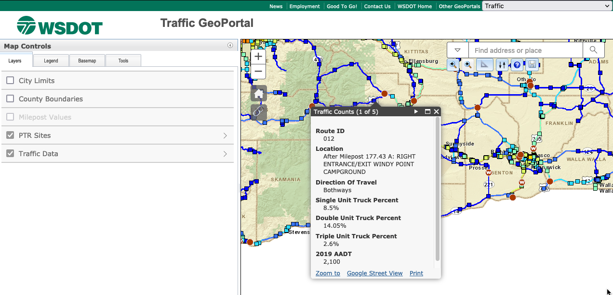

1 Data Stewardship - Fundamental Concepts
This first chapter is meant to introduce basic concepts related to data stewardship, and working with data more broadly in the context of the public sector. We begin by first unpacking the concept of data and explaining how to approach various contextual ambiguities about what constitutes data. We then review some basic concepts related to data stewarship such as management of data and data quality. We wrap up this introduction by discussing or introducing the concept of data governance and data ethics.
1.1 Defining Data
The Department of Licensing defines data as “Numbers and facts that have not been grouped or analyzed. (Data that is grouped becomes statistics. Data that is analyzed becomes data analysis.) This includes numbers and facts in electronic records, paper records, emails, text messages, recordings, and images.” (Policy Admin 1.7.7)
This working definition will be helpful in understanding what the Department of Licensing considers data and how it is to be successfully managed over time. This definition also draws a clear distinction between a type of information object (e.g. electronic records, paper records, text messages, etc) and the role that the information object is supposed to play (e.g. grouped numbers become statistical data, analyzed information objects become data analysis, etc). The point is that data need to have an application to become meaningful to a customer, but in the abstract data are really just information objects with potential for use in many different contexts.
It is often overwhelming to think of all the different ways that data may be used. Instead, I think it is more helpful to think about data as having type and role distinctions - A type is rigid (such as a format) and a role is fluid (it can change given a context). A simple example outside the context of data will help make this clear:
- Jay Inslee is a person. This is a type.
- Jay Inslee is the Governor of Washington State. This is a role. He will play this role for a fixed amount of time. After his term as governor expires he will cease to play this role. But, he will still be a person regardless of whether or not he is the Governor of Washington State.
Data have similar types and roles - A tabular dataset such as a CSV or Excel document will have a type of structure (rows, columns, and values). Unless we take some purposeful action to transform this data it will remain tabular as a type of data.
But, this tabular data (type) might be evidence of some real world example- it might be a set of species occurrence records, the precipitation and temperature of a particular place, the number of vehicles that pass through a certain point at a certain time, or even a vehicle registration number. These are different roles that data can play. Without context these are just numbers or files (information objects) that are waiting to be used as evidence by a data stakeholder (such as the definition offered by DOL above).
This evidential role of data can shift and change depending on who is using the data, and for what purpose. Thinking about data as having roles and types helps us as data stewards to think about what exactly a stakeholder wants and needs. If we understand what role the data is supposed to play we can better find the right type of data for a customer or stakeholder.
1.1.1 Types: Structured vs Unstructured Data
Structure is often a helpful distinction in identifying types of data.
Structured data means that there is a predetermined form or logic to how information is arranged and presented to a user. A spreadsheet is an example of structured data - it has rows, columns and values This structure communicates to a user how the data values should be interpreted.
Unstructured data means that is no predetermined way in which data are supposed to be presented and used by a customer. Unstructured data for example can be emails, text messages, or other formal documents, videos or even audio recordings. As with much of data stewardship - real world data rarely falls exactly in one category or the other. Often data are semi-structured - which is when a set of data has a file format (such as XML or JSON) but no predefined form or scheme that explains for example what column of data should be. Below is a helpful figure - we can think about data as being structured or unstructured, as well as having semi-structures (such as XML or JSON). We will discuss these types of data as well metadata in the next section of the course.

1.1.2 Roles: Entity vs Reference Data
The Department of Licensing, like any complex organization, has a variety of data that it collects and manages over time to execute business functions. DOL data can serve a variety of purposes, and these “data roles” vary not just by the type of data that are collected and managed, but how they are used. This is described succinctly by DOL in the following way:
DOL has a diverse collection of applications to support its operational needs. There are many common data elements across these applications that are currently being defined and used separately and inconsistently. While this usually has no impact on the operation of the individual applications, it creates problems when trying to match and accumulate data from multiple systems for analysis and forecasting.
A helpful way to think about the roles that data plays at DOL is that they can be either as reference data or entity data.
Reference Data: This is the most straightforward type of data. It is comprised of simple lists which are directly defined at the enterprise level for use in all applications. This includes items like States, Counties, Fee Types, etc. These lists tend to be defined by outside sources and change very infrequently.
Entity Data: This is the more complex type of data. It is comprised of data that is common across applications, but instead of being centrally defined, is entered or generated and updated within multiple applications. The classic example of this is customer data. This data tends to be complex in structure and change very frequently.
Both reference and entity data in DOL are roles that different information objects can play. This relational nature of the data helps us to understand when its appropriate to, for example, apply a broad standard for editing or cleaning data, applying a data quality checklist, or even recommending a data source to a customer. Reference data should depend upon external sources for validation and reliability (components of data quality that we will review in the next chapter). Entity data, as described above can have a more relational or real time application that can shift or change given a context.
A breakdown of what we’ve covered in this section so far: Data have types and roles that impact how it is used as evidence. Data types are distinguished by the structure or format of the data, and data roles are distinguished by how the data might be used (as reference data or as entity data).
1.2 Categories of data
Thus far, we’ve described data by types and roles that are pre-established based on some aspect of the data or its use. Another way to differentiate the roles that data might play within an organization is by categorizing data with respect to its content.
DOL has helpful developed a four part categorization that includes the following types of data content:
| Category | Explanation |
|---|---|
| Category 1: Public Information | Information the Agency can or currently releases to the public. It does not need protection from unauthorized disclosure, but does need integrity and availability protection controls. Examples of Category 1: Agency information available on the internet, through brochures and other publications. |
| Category 2: Sensitive Information | Information the Agency doesn’t generally release to the public unless specifically requested and allowable by law. Examples of Category 2: Internal business procedures, policies, and standards. |
| Category 3: Confidential Information | Information specifically protected from disclosure by law. This may include: a. Personal information. b. Information concerning Employee personnel records. c. Information regarding Information Technology infrastructure and security of computer and telecommunication systems. Examples of Category 3: Driver license numbers, driver license photos, Employee personnel files, and computer or network passwords. |
| Category 4: Confidential Information requiring special handling | Information specifically protected from disclosure by law and with: a. Especially strict handling requirements dictated by statutes, regulations, or agreements. b. Serious consequences that can arise from unauthorized disclosure, such as threats to health and safety, or legal sanctions. Examples of Category 4: Social Security numbers, bank account or debit card numbers, tort claim or lawsuit files, medical or disability information, firearm serial numbers. |
This categorization comes from the following publication (OCIO 141.10 and DOL policy 1.7.11)
These categories are essential to understanding not only how data should be governed (discussed in depth below), but also for identifying the role that data might appropriately play. For example, if a customer requests Category 4 data, as a steward of DOL we would need to ensure that the customer has proper credentials to accept this data, and verify that the data is transferred to the customer in a secure and reliable manner.
1.3 Data Collections
Another helpful distinction to draw is whether data are standalone products, or collections of multiple data sources that are of value to a stakeholder. For example the WA State Department of Transportation collects traffic data from each route or highway in the state. Individually a data source may be just about one specific Highway, but in total all data about all Highways in Washington constitute a collection of data. The National Science Board (2005) provides a helpful distinction between three types of data collections:
- General Data Collections: These data have minimal processing or quality checks and may not conform to standards for format and structure—if such standards exist at all. These collections usually are developed by and for a specific internal DOL client and may not be preserved beyond the end of a project. Many thousands of these collections likely exist throughout the department - stored on shared drives or even personal desktops.
- Community Data Collections: These collections may follow standards for a community of potential clients, whether by adoption of existing standards or by developing new standards. Resource data collections may receive some direct funding from DOL or be created to comply with a particular records management requirement for making data accessible to the public.
- Reference Data Collections: Are those that serve large communities, conform to robust standards, and are sustained indefinitely. These collections have large budgets, diverse and distributed stakeholders, and clients that depend on these data as well as established governance structures.
1.4 FAIR Data
An emerging shorthand description for open data - that is applicable to any sector - is the concept of F.A.I.R. FAIR data should be Findable, Accessible, Interoperable, and Reusable. We will discuss this concept in a bit more depth throughout this course. But, having this shorthand definition of what we try to achieve in doing data stewardship is a helpful reminder for the steps needed to make data truly accessible over the long term.
1.5 Data Stewardship
As a data steward our job will include a variety of department specific tasks, but more generally stewardship is used to describe “accountability and responsibility for data and processes that ensure effective control and use of data assets. Stewardship can be formalized through job titles and descriptions, or it can be a less formal function driven by people trying to help an organization get value from its data.”
Some general tasks that might be included in data stewardship:
- Creating and managing metadata.
- Documenting rules and standards.
- Managing Data Quality issues.
- Executing operational Data Governance activities.
- Setting and managing guidelines around data access.
1.6 Data Quality
From the ISO 8000 definition we assume data quality are “…the degree to which a set of characteristics of data fulfills stated requirements.” In simpler terms data quality is the degree to which a set of data or metadata are fit for use. Examples of data quality characteristics include completeness, validity, accuracy, consistency, availability and timeliness. In the final chapter of this book we will discuss strategies and techniques for applying data quality standards to DOL data.
1.7 Data Governance
Data Governance is a collection of practices and processes which help to ensure the formal management of data assets within an organization. Data governance includes not just rules or regulations, but also clear definitions about what data management means in a specific organizational context and how data quality, security, and preservation should be carried out (e.g. through stewardship). While not exhaustive most data governance models will include some combination of the following elements:
- Authority and Control - Who will make decisions, and where are decision making processes documented, for planning, monitoring, and enforcing data management?
- Security - What are the requirements for secure, trusted, authentic data and access regulations in an organization? This includes identity management, as well as the following:
- Planning - How is security described across the organizational assets under management?
- Monitoring - How often are security plans and responsibilities updated, what will constitute a necessary revision of security plans?
- Evaluating - How are security plans and monitoring evaluated and by whom?
- Accountability - If planning, monitoring, or security is not followed, what are the consequences and to whom does responsibility for enforcement ultimately lie with?
- Quality - What constitutes a quality assurance and who is responsible for carrying out either evaluation of quality or updating of data quality standards?
In future chapters we will discuss data storage and data infrastructures, but it helps to foreground those discussions with a simple model depicting the central role of data governance. Data governance includes decisions about not just data, but also the hardware, software, and implementation of policies throughout a data lifecycle. A good data governance model will specify how each of these different aspects of data management should be carried, and will be the basis for creating policies that govern individual data stewardship work.
Data Governance in Washington State: The OneWashington project is the largest data and technology project is recent memory for the State of Washington. Between 2021 and 2027 it will restructure and replace almost all administrative systems with an Enterprise Resource Planning tool, and will reorder all the data those various systems contain. The project has published a Data Governance Strategy document that provides some insight into data governance in practice for the state of Washington.
1.8 Data Ethics
Ethics can be practically framed as “the study of the general nature of morals and of the specific moral judgments or choices to be made by a person” (Burns, 2012). This definition situates ethics as a matter of individual choice, but of course the choices we make as individuals have broad impacts on the communities we are part of, serve, and wish to see flourish. That is, ethics is often practically framed as the result of individual choices and actions, but ethics also encompasses the implicit and explicit values of an institution, community of practice, or even group of data stakeholders.
The relationship between individual choice and collective action is particularly relevant for data stewardship where you will need to collaboratively work to provide regular and unfettered access to resources needed to conduct research, develop guidelines or regulations that govern ethical behavior, and practically implement standards that encode or formalize these rules in a data governance model.
It is important to acknowledge at the outset that data ethics, morals and judgements, whether individual or collective, don’t arise from the ether - they are grounded in beliefs about what is right, just, or serves the greater good given an alternative set of choices. The ethical dilemmas faced by a community of practitioners are often about deciding what is right, how is justice enacted and preserved, or what choices we make can produce the greatest good for the communities on whose behalf we work.
Data ethics can generally include any and all of the following aspects of data:
- Ownership - Who is the responsible party that can make a claim of data - this is often based on licenses, rights of individuals who own data about themselves, or even state and federal regulations about data access.
- Transparency - What do data contain, and how are data about individuals or institutions clearly and coherently documented for potential use. This should include any restrictions of the quality or validity of data.
- Consent - If data contains information about people or groups of people then there must be some documented consent that the data is able to be used for a specific purpose. Consent often goes beyond a license - because it entails not just that the data can be accessed and used, but whether or not the data subjects have given their permission to do so.
- Privacy - If data contains information that may be traceable to an individual or institution then there should be guidance or regulation on how the privacy of those stakeholders can be preserved, and who has access to data at what level of privacy preservation.
- Openness - Data access often falls on a spectrum from freely accessible to anyone with an internet connection to accessible only through a data sharing agreement, or even through a formal data records request.
While these are not the only issues that you may face as a data steward working at DOL - it is often helpful to refer to these different ethical questions to determine what ethics are at stake when making a decision about how to prepare data, how to decide upon data access controls, and what stakeholder privacy means in the context of data release.
DOL’s Policy 1.7.12 addresses Data Ethics directly. The initial statements of the policy emphasize the trust relationship between a government agency and the people of the state as the basis for data ethics in the agency.
Here is an excerpt: > 1. Customer Trust: As the steward of customers’ data, the Agency has an obligation to ethically handle data in a manner that builds and maintains trust. 2. Respecting the Person Behind the Data: The Agency respects customers’ right to privacy and will only collect the minimum personal information required by law to fulfill business purposes. 3. Transparency in the Collection and Use of Data: Customers have the right to know how the Agency and others use their data. The Agency will be transparent about: What data we collect; How we use it; and Who we share it with and for what purposes.
Resources and Further Reading
- Borgman, C. L. (2015). What are Data? In Big data, little data, no data: Scholarship in the networked world. MIT press.
- DOL Data Stewardship Framework (2019)
- Washington State Privacy Principles (2021)
- OneWashington Data Governance Plan (2021)
1.9 Summary
In this chapter we have introduced a number of important concepts for data stewardship including how data might be differentiated based on its type or its role - types of data are based on structure, and these types are usually fixed and unchanging whereas the role of data, such as entity data or reference data, can vary given the application or context of how data are used. We also covered four broad categories used to describe data that are managed in DOL - these include public information, sensitive information, confidential information, and confidential information requiring specific handling. These categories help to further differentiate data by the role they might play for analysis by a customer, or in data governance that attempts to systematically create rules for data access. We also discussed some principles that govern ethical handling of data, including ownership of data, privacy, and consent.
Example 1
Throughout the first chapter of this book we’ve discussed the idea that data are fundamentally relational - they mean different things to different customers at different points in time. To understand this relational nature of data it can be helpful to look at an example of how the same data are displayed to customers in different settings. These settings drive the stewarship of data given the needs of a customer that may vary over time.
Below is a screenshot of the Washington Department of Transportation’s Traffic GeoData Portal. This map displays realtime traffic count data from routes and interstates throughout Washington.

This traffic map is interactive - it allows a customer to select a route, or even a point on a route, where data traffic is collected and see the realtime estimates of things like “How many single unit trucks are on this route in the last hour.” This view of the data is useful for getting a quick overview of what the state of traffic is at any one moment in time. But, lets assume that instead of a quick overview of the realtime data an analyst at DOL wants access to the data that is powering this visualiztion. They may want this data for a variety of reasons - they may want to map all of the single use trucks on the road for June 1st and determine what percentage of singule use trucks are licensed in the state of the WA. The WSDOT traffic geodata portal allows us to view this data by selecting a polygon and “printing” the data. If we choose to do this then we get an easy to manipulate data table that looks like the following:
| Object ID | Route ID | Location | Direction of Travel | Single Unit Truck Percent | Double Unit Truck Percent | Triple Unit Truck Percent | 2019 AADT | Shape |
|---|---|---|---|---|---|---|---|---|
| 1220 | 410 | At Milepost 116.26 A: PERMANENT TRAFFIC RECORDER S818 WEST | Bothways | 9.87 | 2.14 | 0.06 | 2,100 | Point |
| 3624 | 12 | At Milepost 185.62 A: PERMANENT TRAFFIC RECORDER S818 EAST | Bothways | 4.93 | 4.31 | 1.38 | 4,500 | Point |
| 2005 | 12 | Before Milepost 185.44 A: RIGHT WYE CONNECTION SR 12 | Bothways | Null | Null | Null | 2,500 | Point |
| 3809 | 12 | At Milepost 185.25 A: PERMANENT TRAFFIC RECORDER S818 SOUTH | Bothways | 7.45 | 7.18 | 1.34 | 2,500 | Point |
| 2759 | 12 | After Milepost 185.48 A: RIGHT WYE CONNECTION SR 12 | Bothways | Null | Null | Null | 4,500 | Point |
| 4329 | 12 | From Milepost 188.65 A to Milepost 189.87 A | 5,700 | Polyline | ||||
| 2163 | 12 | From Milepost 185.48 A to Milepost 188.65 A | 4,500 | Polyline | ||||
| 2323 | 410 | From Milepost 114.40 A to Milepost 116.37 A | 2,100 | Polyline | ||||
| 4299 | 12 | From Milepost 178.86 A to Milepost 183.45 A | 2,300 | Polyline | ||||
| 1434 | 12 | From Milepost 183.45 A to Milepost 185.48 A | 2,500 | Polyline |
This table is much more informative and useful for analysis than a map. It gives us variables (such as Object ID, Route ID, Location). It also gives us observations of things like the number of single use trucks on Route 410 at milepost 116.2 on June 1st at 12:00pm.
Questions: 1. In the example above from WSDOT - is this entity data or reference data? 2. Is the map an example of structured, unstructured or semi-structured data? Why? 3. According to the DOL data categories, what kind of data is this table?